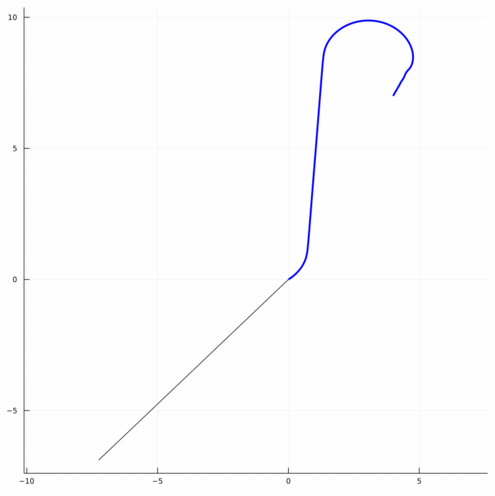

MAM5/M2-INUM
Commande optimale
2026-27

TP 1 - Navigation (solution) (solution 3 arcs) (trailers)
TP 2 - Tir simple (solution) (Kepler)
Organisation et intervenants
- 10 séances de 3H
- Intervenant J.-B. Caillau
Évaluation
- 2 EX CC (tous deux coeff. 1)
Références
Bertsekas, D. A course in reinforcement learning. Athena scientific, 2023
Ekeland I. Mathematics in the social sciences. Torino lectures, 2022
Evans, L. C. An introduction to mathematical optimal control theory. Univ. California, 2024
Fleming, W. H. ; Rishel, R. W. Deterministic and stochastic optimal control. Springer, 1975
Gardner, M. The unexpected hanging and other mathematical diversions. University of Chicago Press, 1991
Hager, W. Computational Methods in Optimal Control: Theory and Practice. SIAM, 2025
Sutton, R. S. ; Barto, A. G. Reinforcement learning : an introduction, MIT press, 2015
Trélat, E. Contrôle optimal, théorie et applications. Vuibert, 2005